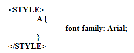
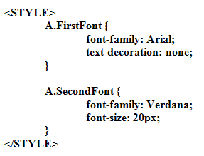

CSS and Hyperlinks
If you're formatting a hyperlink, you can place all the formatting in a CSS Style. In the style below, we've specified an Arial font for all of our links:

This style will apply to all the hyperlinks on the page. You don't need to add any CLASS attributes to the A HREF tag because we're using the HTML selector A.
If you want to set up colours for your links, you can do it like this:
A:link {
color: red;
}
Notice that a colon follows the A this time, then the word "link". In between the curly brackets we've set the colour to red.
If you want to use the ALINK attribute, it's this:
A:active {
color: green;
}
The VLINK is this:
A:visited {
color: blue;
}
One more style that you may be interested in is this:
A:hover {
color: red;
}
With the above style, whenever you move your mouse over a hyperlink the colour will change to red.
When we used the colon above we were using something called a Pseudo Class. These are just extensions to the normal CSS class rules. Another way to extend classes is by inserting your own CLASS names between the HTML selector and the property you want to change. For example, examine the following code:
A.MyHoverColor:hover {
color: red;
}
To use the above code, you apply a CLASS attribute to your hyperlink:
<A HREF="pages/about.html" CLASS=" MyHoverColor ">About this site</A>
Now, only this link will change colour when you move your mouse over it, the rest will behave normally.
You don't need to add a value at the end (the :hover bit, for example). Suppose
you want the first link to be an Arial font with no underline, and the second
one to be 20 pixel Verdana. You could set up two Pseudo Classes. Like this:

You'd then apply them like this:
<A HREF="pages/about.html" CLASS="FirstFont">About this site</A>
<A HREF="pages/contact.html" CLASS="SecondFont">Contact Us</A>
Notice how we've switched off the hyperlink's underline:
text-decoration: none;
Try out the above code and see the results in your browser. Try using a different hover colour, as well. (Make sure the hover code comes last, as some browsers will ignore it, otherwise.)
But extending your Classes this way enables you to have more control over most of the elements on your page, and not just hyperlinks.
In the next lesson, you'll learn how to add external style sheets to your web pages.